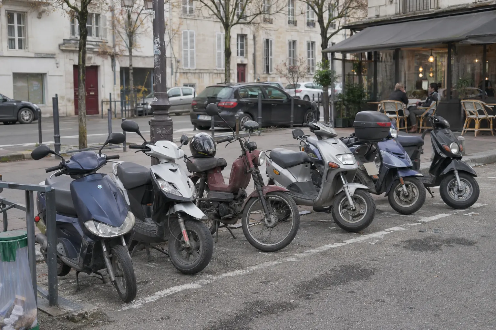
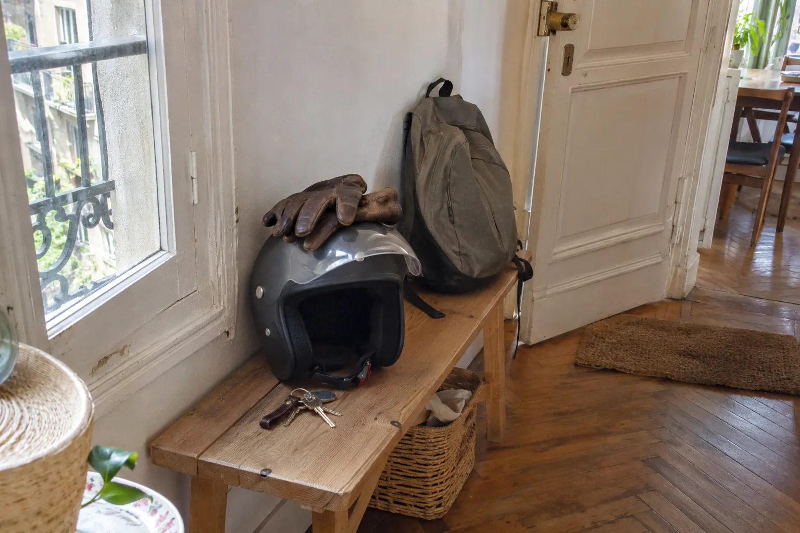

Scooter 45 km/h
Scooter électrique pliable 45 km/h : le guide simple.
Plus rapide qu’une trottinette, plus compact qu’un scooter classique : le scooter pliable à 45 km/h a tout pour plaire en ville. Mais ce n’est plus un simple engin de déplacement : permis, carte grise et équipement entrent en jeu. On vous explique.

En bref
- Un scooter électrique à 45 km/h est un cyclomoteur (catégorie L1e) : ce n’est pas une trottinette.
- Il faut le permis AM (ex-BSR) ou le permis B, une carte grise et une assurance de véhicule motorisé.
- Casque homologué et gants homologués sont obligatoires.
- L’E-scooter 360 d’Augment se plie et se range chez vous : 1 265 × 350 × 1 180 mm une fois plié.
Ce n’est pas une trottinette (et c’est important)
Dès qu’un véhicule électrique dépasse 25 km/h et monte jusqu’à 45 km/h, il change de famille : c’est un cyclomoteur, catégorie L1e. Les règles des trottinettes ne s’appliquent plus. On passe à celles des scooters 50 cm³.
La bonne nouvelle : à 45 km/h, vous roulez dans le trafic, sur la chaussée, sans vous faire doubler par tout le monde. Idéal pour des trajets de 10 à 20 km.
Quel permis faut-il ?
Il faut le permis AM (l’ancien BSR), accessible dès 14 ans après une formation courte, ou le permis B si vous conduisez déjà une voiture. Les personnes nées avant le 1er janvier 1988 en sont dispensées pour un cyclomoteur.
Carte grise et assurance
Comme tout scooter, un cyclomoteur électrique doit être immatriculé. La démarche se fait en ligne sur le site de l’ANTS. Une plaque se fixe à l’arrière : l’E-scooter 360 a un support prévu pour.
Il faut aussi une assurance de véhicule motorisé, au minimum la responsabilité civile. Demandez des devis : les tarifs varient beaucoup selon votre profil et votre ville.
Casque et gants : non négociables
Le casque homologué et les gants homologués sont obligatoires, été comme hiver. À 45 km/h, ce n’est pas du luxe.

Le vrai plus du pliable : le rangement
Pas de garage, pas de local à vélos ? C’est là que le scooter pliable prend tout son sens. L’E-scooter 360 d’Augment se replie à 1 265 × 350 × 1 180 mm. Il entre dans un ascenseur, se glisse dans une entrée ou au bureau. Il pèse 36 kg batterie comprise : on le roule plus qu’on ne le porte.
Sa batterie de 1 080 Wh est amovible : vous pouvez la monter chez vous pour la recharger, même si le scooter reste en bas. Avec une seconde batterie en option, l’autonomie passe de 53 à 106 km.
Combien ça coûte ?
L’E-scooter 360 coûte 1 990 € à l’achat, ou se loue dès 25,90 €/mois sur 36 mois avec 1 490 € d’acompte (de 64,90 à 159,90 €/mois avec l’acompte minimal de 290 €, selon la durée). Contrairement aux Agaru, il n’inclut pas le service de réparation tout compris : il est couvert par une garantie constructeur de 2 ans, 5 ans sur le cadre. On compare les formules dans louer ou acheter : le match.
Le 360 en détail
Autonomie, poids, dimensions plié, grille de location complète : tout est dans la fiche et le simulateur.
Les boutons vers augment.eco sont des liens partenaires : comment le site est financé.
Questions fréquentes
Quel permis pour un scooter électrique 45 km/h ?
Le permis AM (ex-BSR) ou le permis B. Les personnes nées avant le 1er janvier 1988 en sont dispensées pour un cyclomoteur.
Un scooter électrique pliable doit-il être immatriculé ?
Oui. Un scooter électrique qui roule jusqu’à 45 km/h est un cyclomoteur (catégorie L1e) : il doit avoir une carte grise, une plaque et une assurance.
Le casque et les gants sont-ils obligatoires sur un scooter électrique ?
Oui. Le casque homologué et les gants homologués sont obligatoires sur un cyclomoteur, donc sur un scooter électrique à 45 km/h.
Quelles sont les dimensions de l’E-scooter 360 plié ?
1 265 × 350 × 1 180 mm, pour un poids de 36 kg batterie comprise, selon Augment.
Sources
- Caractéristiques et prix de l’E-scooter 360 : augment.eco (France)
- Immatriculation d’un véhicule : ANTS
- Que Choisir : le speed bike, un cyclomoteur à pédales (règles L1e)
Prix relevés sur augment.eco (France). Notre méthode.